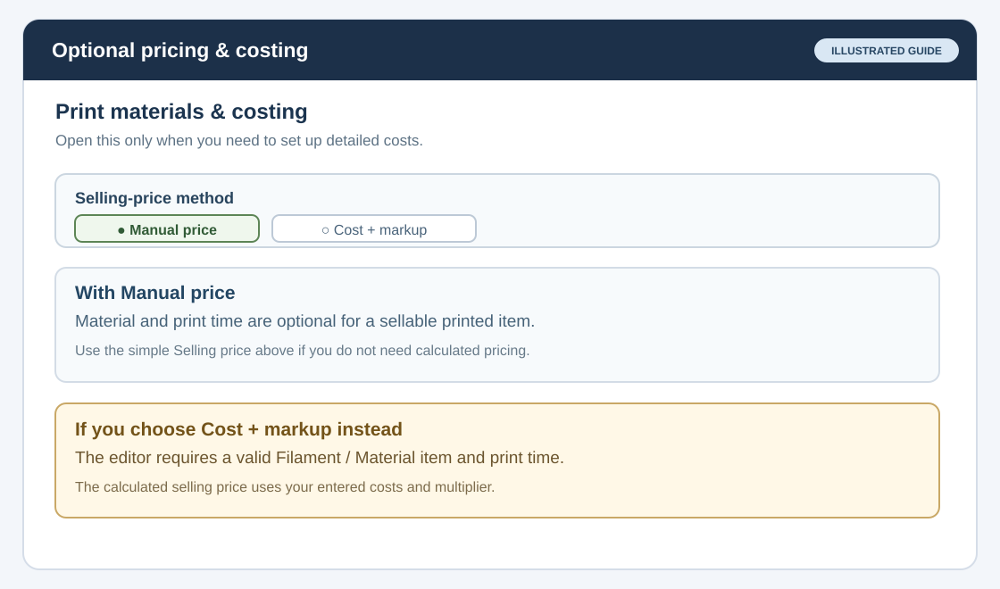

Catalog & Pricing
Add products, set prices and track stock.
Add a Catalog item
- Open Catalog → + Add.
- Choose 3D Printing, Handmade Products, Buy & Resell or another item type.
- Fill in fields marked Required.
- Select Save Item.
See the illustrated step-by-step guide.
Type and Category
Type describes the item. Category is an optional grouping and does not affect costing. An Assembly is a Type, not a Category.
Costs and selling prices
Buy & Resell uses purchase cost, even for finished 3D prints. Items you make yourself can use material, labor and equipment costs. Choose Manual price or Cost + markup as appropriate.

Inventory
Save Item saves item details; it does not add stock. Use Receive, Use, Adjust or Build for inventory transactions.
Assemblies
Choose Assembly and add existing Catalog components with quantities. Building an Assembly uses those components.
Imports and backups
Customer/Product CSV exports are basic lists, not full backups. Use Full Business Backup in Data Tools for complete backup and restore workflows.